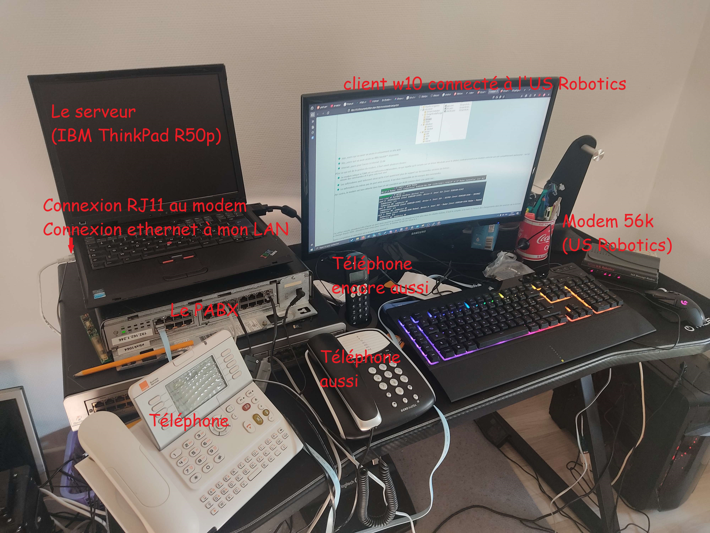
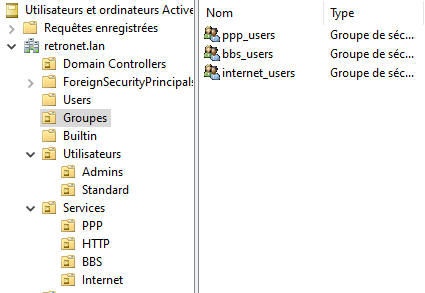
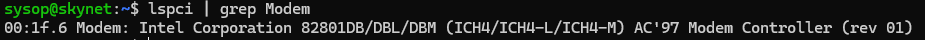
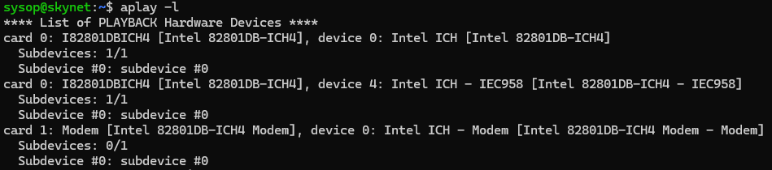
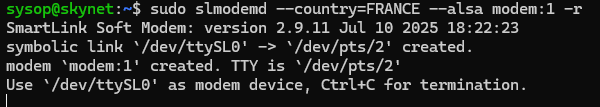
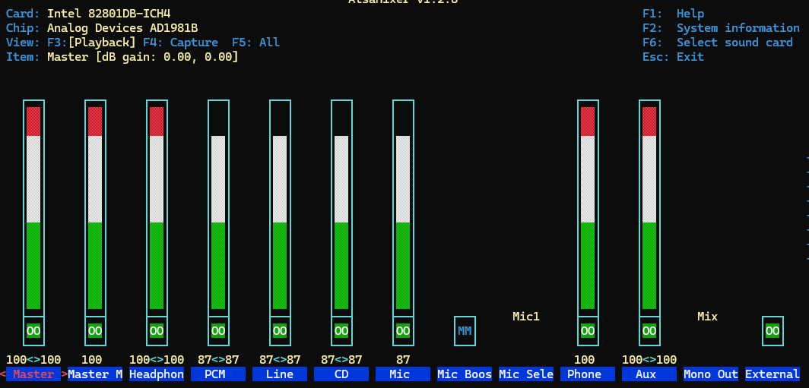
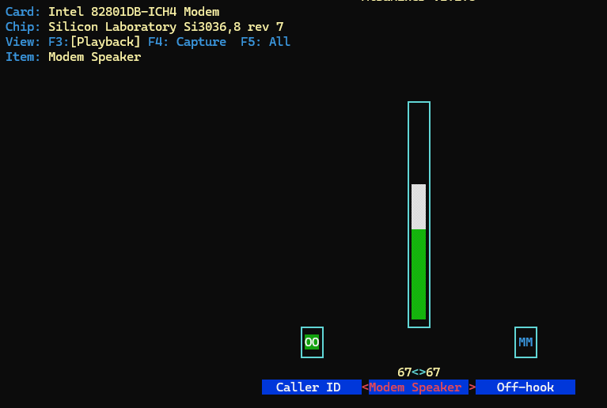

L'installation
Je compte réaliser l'installation suivante :
RJ11 RS-232 USB
Box <----> Modem <----> RPI
Dans le futur, j'intégrerai un PABX afin de me fournir un accès à Internet 56k en local, les modems ayant besoin de lignes téléphoniques distinctes (1 modem = 1 ligne).
07/07/25
J'ai installé dans mon labo (sur mon bureau dans ma chambre) un PABX Alcatel OmniPCX Office Compact - donné par M. Millet, enseignant à l'IUT de Montbéliard - ainsi que des téléphones :
-
Un 4039 Numérique
-
Un Doro Matra analogique
J'ai également connecté des modems 56k :
-
Un intégré de mon IBM Thinkpad R50p (Windows XP)
-
Un externe : 3Com U.S. Robotics 56K Message Modem, connecté à mon Lenovo Thinkpad T14 (Arch Linux)
J'ai ensuite rapidement créé un plan de numérotation à 4 chiffres pour que les téléphones puissent communiquer entre eux.
Une fois le bon fonctionnement confirmé, j'ai tenté d'établir une connexion entre les deux modems avec minicom sur Linux et l'Hyperterminal sur XP. Les deux modems parviennent à se connecter à 33.6kbit/s, ce qui était prévu.
J'ai ensuite tenté d'envoyer des fax avec hylafax sur Linux, ce qui fonctionne parfaitement bien (en noir et blanc). Cependant, je n'arrive pas à recevoir de fax sur Linux, ce que je ne comprends pas encore. A voir....
Pareil, pour le transfert de fichiers classiques (images, musique, vidéo), je passe par minicom côté linux, mais il ne semble pas comprendre le modem en face, même si il utilise le même protocole de transfert (zmodem)...
Une photo de l'install (ignorez le bazar, c'est un labo)

13/07/25
Update apres une semaine de pas grand chose et de boulot (réel).
J'ai mis Debian 12 sur l'IBM pour avoir un semblant de sécurité sachant qu'il sera exposé sur Internet, et j'y ai mis un DC pour tester un peu l'AD sur Linux avec Samba. J'ai créé des groupes ayant des droits spécifiques :

-
ppp_users qui va avoir un accès à uniquement ce site web
-
bbs_users qui va avoir accès au BBS bientôt™ disponible
-
internet_users pour l'accès à internet 33.6k
POur ce qui est de la gestion du modem, il faut savoir plusieurs choses:
-
Le modem intégré à l'IBM est un softmodem/Winmodem, ce qui signifie qu'il compte sur un driver Windows pour le piloter, contrairement à un modem externe qui est complètement autonome : on lui envoie des commandes et il gère cela tout seul
-
Les softmodems sont tellement vieux qu'ils n'ont quasiment plus de support sur les nouvelles versions de Debian...
-
Le softmodem n'a même pas de port série associé, il est donc impossible de lui envoyer des commandes
Par contre, le modem est bien détecté dans lspci et est considéré par ALSA comme étant une carte son :


J'ai utilisé ensuite slmodemd afin d'avoir un port série associé au modem. Or slmodemd n'est plus dans les dépôts Debian, il faut le compiler à la main en faisant des changements dans les sources car le kernel a changé depuis 2006. slmodem était conçu pour Linux 2.6, et Debian 12 est sur Linux 6.1...
Après compilation et exécution on a un port série associé !

On ajoute l'argument -r pour détecter la sonnerie, sans ça, on ne voit pas dans minicom (moniteur série) les RING, et donc on ne peut pas détecter un appel.
Par contre, comme le modem est une carte son, il faut monter le volume dans alsamixer et s'assurer que rien d'important ne soit mute (micro, Caller ID...), mais il faut mute Off-hook qui représente le combiné décroché : si le combiné est décroché, la ligne sonne occupée.


On peut ensuite tenter un appel vers le serveur, on ouvre minicom pour avoir un suivi de ce qui se passe, et on appelle (monter le son pour entendre la douce mélodie de handshake J) :
Je peux enfin utiliser le modem !!! Plus qu'à faire en sorte décrocher et raccrocher automatiquement, mettre un serveur PPP, BBS et gérer les droits.
La dernière mise à jour de ce site date du 13/07/25